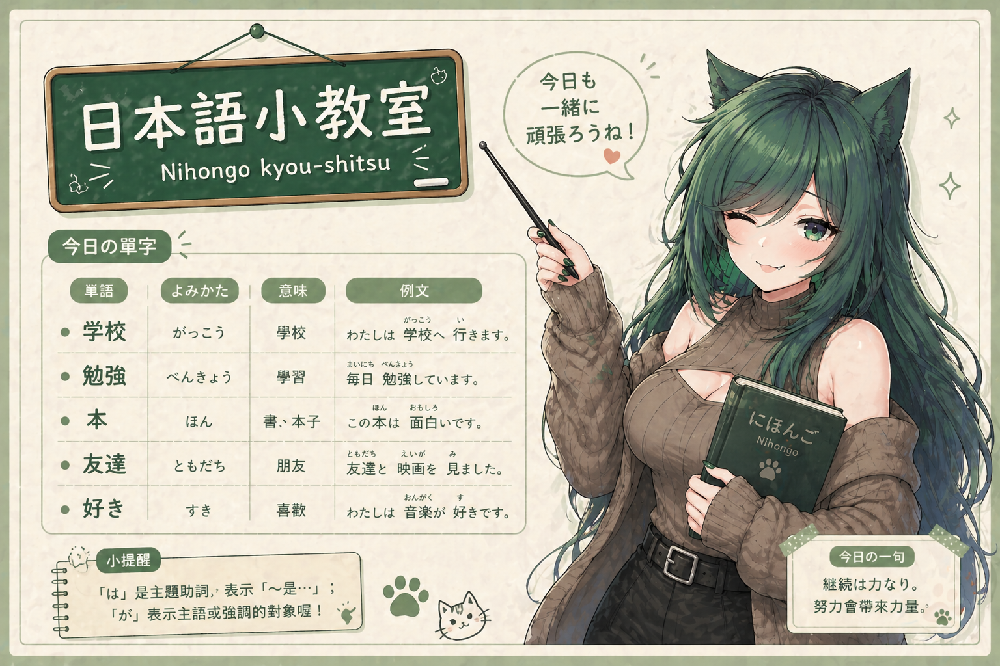

點擊探索每個系列

手繪 · MC建築 · 電繪

立即聽 · 其他平台

進行中的程式專案 · 筆記內容

學習歷程・作品集備審資料
每日一詞・跟著比卡學單字

每日接觸一個台語單字，從生活出發，輕鬆培養語感，慢慢累積也能自然開口。

每天學習一個日文單字，從基礎開始，逐步建立語感，穩穩提升出國詞彙量。

每天學習一個英文單字，從有趣的詞彙切入，讓英文慢慢變成日常的一部分。
大家好，謝謝你們願意花時間來看看我。我是一個會為了曾經喜歡、現在好奇的事情認真做很多功課的人，目前還是一名大學生，也在打工的過程中持續學習資料庫相關的知識。
我所在的公司主要在做金融系統，雖然一開始對金融沒有特別的興趣，但在接觸之後，反而讓我對投資以及整個金融體系有了更多理解與觀察。
如果你也喜歡唱歌，那我們應該會很有共鳴。這裡是一個用比較不傳統方式學習唱歌的人，也很歡迎一起交流分享。
平常也會畫畫，目前主要還是在模仿階段。其實一直很想好好學畫畫，只是還沒有完成過讓自己滿意的作品，所以就當作紀錄與分享，輕鬆看看就好。
我就讀資管系，對新事物一直抱有很大的好奇心，也因為想讓自己變得更強，所以會持續學習各種程式相關的技術。